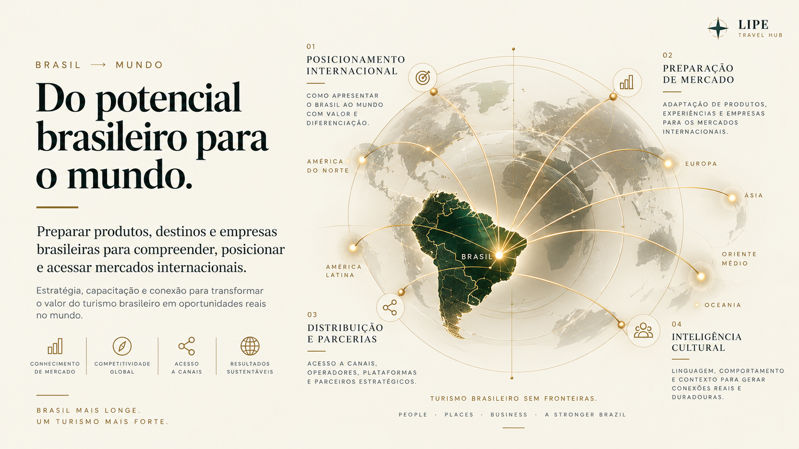

Destinos & Secretarias
Preparação de oferta, comunicação, equipes e ecossistemas para atuação internacional.

Brasil Masterclass prepara destinos e organizações do turismo para compreender mercados, posicionar sua oferta e construir relações internacionais.
Outra direção: Mundo → Brasil · Trade Education & Market Activation →O Brasil Masterclass organiza leitura de mercado, posicionamento comercial, branding e relacionamento internacional em uma jornada clara, prática e aplicável. O programa conecta produtos, destinos e profissionais às expectativas de buyers, operadoras, OTAs e parceiros globais.
O desenho combina repertório internacional, ferramentas de aplicação imediata e linguagem orientada à realidade do trade — com flexibilidade para estados, municípios, regiões, associações e segmentos.
Preparação de oferta, comunicação, equipes e ecossistemas para atuação internacional.
Posicionamento, produto, proposta comercial, distribuição e relacionamento com buyers.
Estrutura comercial, diferenciação e presença para conquistar novos mercados.
Capacitação compartilhada para fortalecer a internacionalização de um território ou setor.

Quatro etapas conectadas transformam conhecimento em preparo comercial, presença de marca e capacidade de relacionamento internacional.
Leitura de demanda, comportamento do viajante, estrutura de produto, precificação e benchmarking internacional.
Cadeia de distribuição, proposta de valor, canais, negociação, follow-up e acesso aos buyers certos.
Narrativa, conteúdo, reputação, presença digital e diferenciação para ampliar lembrança e desejo.
Feiras, rodadas, networking, pitch, negociação e construção de relações comerciais duradouras.
O conteúdo combina aprendizagem objetiva com ferramentas que apoiam a aplicação no dia a dia de destinos, organizações e profissionais.
Conteúdo em blocos objetivos, preparado para uma jornada digital fluida.
Atividades que aproximam cada conceito da realidade de quem participa.
Ferramentas para estruturar produto, proposta, pitch e presença internacional.
Modelos de propostas, roteiros, follow-up e materiais de relacionamento com o mercado.
Encontros presenciais ou online para lapidar posicionamento, pitch e aplicação.
Reconhecimento formal da jornada de capacitação concluída.
O Brasil Masterclass pode ser ativado como programa digital, edição customizada, experiência Pocket ou trilha acompanhada por mentorias.
Quatro módulos digitais com vídeos curtos, materiais interativos, exercícios e ferramentas.
Programa adaptado por estado, município, região, associação ou segmento de mercado.
Formato compacto para eventos, rodadas, ativações institucionais e agendas de trade.
Encontros presenciais ou online para apoiar aplicação, pitch, posicionamento e negociação.
O Brasil Masterclass abre espaço para marcas nacionais e internacionais participarem da qualificação do trade com propósito, conteúdo, ativações e visibilidade de ciclo longo.
Receber proposta de patrocínioPresença transversal no programa, conteúdos e ativações.
Associação temática a uma frente estratégica do programa.
Ativação customizada para um território, destino ou ecossistema.
O programa integra capacitação, reconhecimento e aplicação profissional.
Estrutura flexível para destinos, entidades e organizações com diferentes objetivos de mercado.
Conteúdo orientado à realidade de buyers, OTAs, feiras, rodadas e plataformas internacionais.